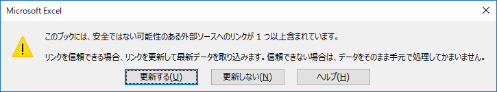
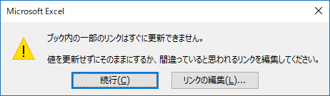
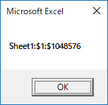

(※ 2017 年 6 月 27 日に Japan Office Developer Support Blog に公開した情報のアーカイブです。)
こんにちは、Office 開発サポート チームの中村です。
Excel には、SpecialCells メソッドという、引数に指定した条件に合致するセルを返すメソッドが用意されています。
タイトル : Range.SpecialCells メソッド (Excel)
アドレス : https://msdn.microsoft.com/ja-jp/library/office/ff196157.aspx
現在の Excel の動作では、特定の処理の流れでこのメソッドを使用するとき、期待した範囲が取得できないことがあります。
今回の記事では、この動作について詳細を記載します。この動作が生じる状況に該当する場合は、後述の回避策で対応することをご検討ください。
2017/7/13 Update
この動作は、Excel 製品の制限事項であることを追記しました。
4-1. DisplayAlerts プロパティに False を設定する
4-2. 事前に SpecialCells メソッドを実行する
1. 再現サンプル
今回の現象は、発生条件が込み入っていますので、まずは現象が再現するファイルとサンプル プログラムを用いて、具体的な動作を説明します。
1-1. 再現ファイル構成
以下のような構成の Excel ファイルを作成します。
外部リンク先用の新規ブック (以下では [testBook.xlsx] とします。内容は何も変更する必要はありません。)
以下のシート構成のブック
<シート 1>
空のシートを用意します。(発生条件としては、「SpecialCells メソッドの指定条件に合致するセルがないこと」です。)
<シート 2>
外部ブックへのリンクを含む数式を設定します。
例) =[testBook.xlsx]Sheet1!A1
このリンクは、再現手順実行時に更新できない状況であることが条件となります。このため、のちに再現手順を実行するときに、リンク先ブック (testBook.xlsx) を同時に開いたり、再現ファイルと同じフォルダに配置しないでください。
1-2. サンプル プログラム
1-1. で作成した数式を含むブックのオープン時にマクロが実行されるよう、ThisWorkbook オブジェクトに以下のマクロを記述します。SpecialCells メソッドで、数式を含むセルを検索し、合致したセルのアドレスをダイアログに表示するマクロです。
1 | Private Sub Workbook_Open() |
このサンプル プログラムのポイントは、SpecialCells メソッドを、該当セルがないシートに対して実行することです。今回、シート1 には何も記述していないため、該当セルはありません。この場合、本来の動作では、以下のようなエラー メッセージが表示されます。

図 1. SpecialCells メソッドで該当セルがない場合の想定された動作
上記の手順で作成したファイルを保存します。
2. 再現手順と現象
次に、再現手順を説明します。今回の現象は、再現手順にも条件があります。
まず、1. で作成した数式とマクロを含むファイルを開きます。
注意
このとき、ファイルが信頼されていない場合は、マクロや数式の更新が無効となり、セキュリティの警告が黄色いバーで表示され、[コンテンツの有効化] ボタンのクリックによってこれらの処理が行われます。この状態では、現象は再現しません。ファイルのオープン時に自動的にこれらの処理が行われるよう、ファイルを信頼してください。
<ファイルを信頼する方法>
以下のいずれかの方法で、今回の再現に必要なマクロの実行と外部リンクの更新を許可することができます。
- [オプション] – [セキュリティ センターの設定] で [信頼できるドキュメント] の [信頼済みドキュメントを無効にする] にチェックが入っていない状態で、ファイルを開いて [コンテンツの有効化] をクリックします。信頼済みドキュメントにするか確認するダイアログが表示される場合は、ここで [はい] を選択します。
- [オプション] – [セキュリティ センターの設定] で [信頼できる場所] にファイルの格納フォルダを追加します。
- [オプション] – [セキュリティ センターの設定] で [マクロの設定] を [すべてのマクロを有効にする] に、かつ、[外部コンテンツ] の [ブック リンクのセキュリティ設定] を [すべてのブック リンクの自動更新を有効にする] に設定します。(※ 以後、全てのファイルにこの設定が有効になりますので、検証後元に戻してください。)
次に、表示されるリンクの更新確認ダイアログで、[更新する] をクリックします。(ここで [更新しない] を選択すると、現象は発生しません。)

図 2. 外部リンク更新確認ダイアログ
すると次に、以下のダイアログが表示されますので、[続行] をクリックします。

図 3. 外部リンク更新不可通知ダイアログ
この結果、「該当するセルが見つかりません」というエラーが期待されますが、現象発生時は、以下のようにセル全体 ($1:$1048576) が結果として返されます。

図 4. 現象発生時の結果
3. 発生条件と原因
ここまでに説明した発生条件をまとめると、以下の通りです。
<ファイル作成時の条件>
1. ブック内に外部ブックへのリンクが存在すること
2. SpecialCells メソッドで初めにチェック対象とするシートに、条件に合致するセルがないこと
<実行手順の条件>
3. ブックが信頼されており、ブックを開いたときにリンクの更新とマクロの実行が行われること
4. リンク更新確認ダイアログで、[更新する] を選択すること
5. 外部ブックへのリンクが更新できないこと
これらの条件をすべて満たすとき、ブックオープン時の外部リンク更新の過程で、リンクが更新できない旨のエラーとして [図 3. 外部リンク更新不可通知ダイアログ] が表示されます。
このエラーの発生によって、Excel の内部処理では、他のエラーを含め、一時的にエラーが無視される状態となります。この間に SpecialCells メソッドが実行されると、「該当するセルが見つかりません」というエラーも無視されます。その結果、SpecialCells メソッドの結果として該当セルはないものの、エラーは発生していないという意図しない状況が生じ、シート内のセル全体が返されます。
4. 回避策
2017/7/13 Update
本動作については、Excel 製品の制限事項となります。以下の回避策での対処をご検討ください。
プログラムにて、以下のいずれかの対応を行うことで再現条件を避けることができ、この現象を回避できます。
4-1. DisplayAlerts プロパティに False を設定する
先述の発生時の動作に記載のとおり、[図 3. 外部リンク更新不可通知ダイアログ] が表示されることによって、エラーが無視される状況が生じます。
このため、このダイアログを表示しないよう、SpecialCells メソッドの実行直前に DisplayAlerts プロパティを False に設定することで回避できます。
タイトル : Application.DisplayAlerts プロパティ (Excel)
アドレス : https://msdn.microsoft.com/ja-jp/library/office/ff839782.aspx
<回避策 4-1. を追加したサンプル プログラム>
1 | Private Sub Workbook_Open() |
この対処方法の場合、[図 3. 外部リンク更新不可通知ダイアログ] は、ユーザーに通知されません。
4-2. 事前に SpecialCells メソッドを実行する
[図 3. 外部リンク更新不可通知ダイアログ] は、当該ブックでの初回の SpecialCells 実行タイミングで表示されます。
このため、実際に結果を使用する SpecialCells メソッドの実行前に、ダミーで SpecialCells メソッドを実行し、この結果は利用しないといった対応方法も検討できます。
<回避策 4-2. を追加したサンプル プログラム>
1 | Private Sub Workbook_Open() |
この方法では、[図 3. 外部リンク更新不可通知ダイアログ] がユーザーに通知されます。
今回の投稿は以上です。
本情報の内容 (添付文書、リンク先などを含む) は、作成日時点でのものであり、予告なく変更される場合があります。